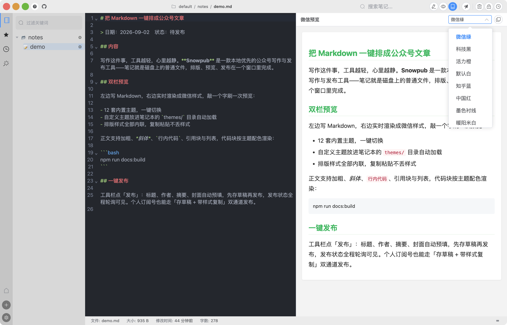
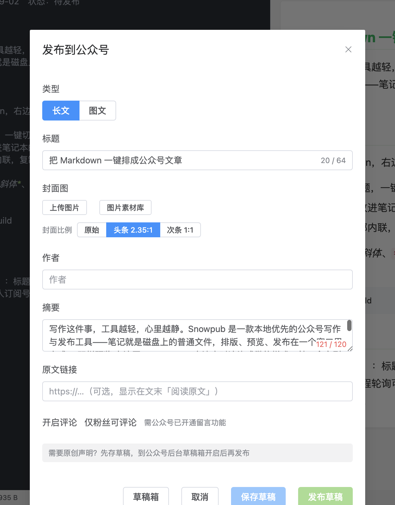

写作与发布
笔记写完后不用离开编辑器：双栏预览确认排版，一键存入公众号草稿箱，再决定发布。公众号 API 的准备工作（AppID、白名单）见公众号接入。
双栏编辑与微信预览
打开 .md 笔记后，工具栏的三个视图按钮控制布局：「编辑」（只看源码）、「预览」（只看渲染效果）、「公众号」（双栏）。点「公众号」进入双栏模式：
- 左栏：CodeMirror Markdown 编辑器，语法高亮、自动折行
- 右栏：微信样式实时预览，左边每敲一个字，右边立刻刷新成公众号排版

右栏顶部是「微信预览」工具栏：主题下拉框（下一节）和 📋「复制全文（带样式）」按钮（见文末「带样式复制」一节）。
微信正文不保留超链接。预览和发布时，正文里的链接会自动转成文末的「参考链接」列表，读者通过文末地址访问原链接。
主题：12 套内置 + 自定义
「微信预览」工具栏的下拉框切换排版主题，预览选什么主题，发布出去的就是什么排版。内置 12 套：
微信绿（默认）、科技黑、活力橙、默认白、知乎蓝、中国红、墨色衬线、暖阳米白、莫兰迪、樱花粉、暗夜、青竹。
自定义主题放进笔记本目录的 themes/ 文件夹（*.json），启动时自动加载进同一个下拉框，显示名取 JSON 里的 meta.displayName。内置主题名不允许被同名文件覆盖。
主题样式在渲染时全部内联到每个标签上——公众号编辑器只保留内联样式，这也是「带样式复制」粘贴过去不丢样式的原因。
发布对话框
工具栏点「发布」按钮（纸飞机图标）打开发布对话框。还没配置公众号的话，点击会直接引导到「设置 → 公众号」。

对话框顶部的「类型」选择发布形态，默认「长文」（即常规公众号文章）。长文的字段：
| 字段 | 说明 |
|---|---|
| 标题 | 上限 64 字，自动预填（来源见下一节） |
| 封面图 | 本地上传或从素材库选择，详见图片与封面 |
| 作者 | 上限 32 字，留空时用「设置 → 公众号」里的默认作者 |
| 摘要 | 上限 120 字，打开对话框自动预填正文前 120 字；清空后由微信取正文前 54 字 |
| 原文链接 | 可选，显示在文末「阅读原文」，需以 http(s):// 开头 |
| 开启评论 / 仅粉丝可评论 | 需公众号已开通留言功能 |
底部四个按钮：「草稿箱」「取消」「保存草稿」「发布草稿」。发布流程分两步：
- 保存草稿——把文章（含正文配图、封面）上传到公众号草稿箱，提示「草稿已保存」
- 发布草稿——草稿保存后才可用；提交后显示「发布已提交，微信审核可能需要几分钟」，Snowpub 自动轮询状态，发布成功 / 失败 / 被拒绝都会在对话框里提示
建议先「保存草稿」，到公众号后台确认排版和封面裁切无误后再「发布草稿」（或直接在后台发布）。
没有 API 发布权限的公众号（如个人订阅号）点「发布草稿」会返回 48001 错误。Snowpub 会记住这一状态：之后打开发布对话框自动禁用发布按钮、引导走「保存草稿 → 后台发布」流程，详见公众号接入。
需要原创声明的文章：先存草稿，到公众号后台草稿箱里开启原创声明后再发布。
front matter 与文章结构
发布对话框的标题、作者等字段不用手填，笔记里声明一次即可。两种约定可以混用：
front matter——笔记头部用 --- 包裹的元信息区：
---
title: 文章标题
author: 作者名
digest: 自定义摘要
cover: images/cover.png
source: https://example.com/original-post
---
「# 标题 + ## 内容」结构——H1 是标题，## 内容 之后是正文，两者之间的部分（元信息区）不进正文：
# 文章标题
这里放元信息区（日期、状态备注等），不会进入正文
## 内容
正文从这一行开始……
打开发布对话框时按优先级自动预填：标题 front matter title > H1 > 笔记文件名；作者 author > 默认作者；摘要 digest > 正文前 120 字自动生成；cover 和 source 分别对应封面图与原文链接。预览同样遵守这套结构——## 内容 之前的元信息不会渲染进正文。
图片消息（图文）
对话框顶部的「类型」切到「图文」，对应微信的图片消息（newspic）：以图片为主体的动态，适合一次发一组图配一段文字；「长文」则是读者熟悉的常规文章。两者字段差异：
| 长文 | 图文（图片消息） | |
|---|---|---|
| 主体 | Markdown 渲染的图文正文 | 最多 20 张图片，首图即封面 |
| 标题上限 | 64 字 | 20 字 |
| 文字 | 正文完整排版 | 纯文本描述，上限 1000 字 |
图片通过三个入口添加：「上传图片」（本地文件）、「图片素材库」（已有素材多选追加）、「从笔记收集」（自动扫描当前笔记里的本地图片逐一上传）。图片消息要求图片为公众号永久素材，这三个入口上传的都是永久素材。
图片消息的标题和描述不支持 emoji 及部分特殊字符，微信会直接拒稿。保存时 Snowpub 检测到会列出这些字符，确认后自动移除再保存。
草稿箱同步
发布对话框左下角的「草稿箱」打开草稿列表，和公众号后台看到的是同一份：
- 拉取草稿：刷新列表，显示封面、标题、作者、更新时间和摘要
- 每条草稿可查看内容（弹窗预览）、发布草稿、删除草稿
在后台或手机上存的草稿也能拉回来直接发布，两端互不冲突。
带样式复制：个人号的备用路径
「预览」和「公众号」双栏的工具栏都有 📋「复制全文（带样式）」按钮：整篇按当前主题渲染、连同样式复制到剪贴板，粘贴到 mp.weixin.qq.com 的编辑器里就是成品排版，改两笔即可群发。
对没有 API 发布权限的个人订阅号，这是除「存草稿 → 后台发布」之外的另一条发布路径——完全绕开 48001 限制。
下一步：图片与封面——粘贴传图的落盘规则、素材库与智能封面三档比例。